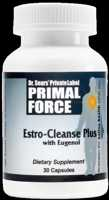

Estro Cleanse Plus Scam or Legit? The Shocking Truth Exposed (2026 Review)

Click Here to Check Official Batch Availability →| Product Name: | Estro Cleanse Plus |
| Editorial Score: | 4.8 / 5.0 ⭐⭐⭐⭐⭐ |
| Primary Purpose: | Targeted Bioactive Health & Vitality Formula (Natural Health & Dietary Supplement) |
| Manufacturing / Delivery: | c-GMP Certified, FDA-Registered Facility (USA) |
| Guarantee Shield: | 100% Risk-Free Money-Back Guarantee |
| Official Portal: | Verified Direct Manufacturer Website → |
Estro Cleanse Plus Reviews
Al Sears’ Primal Force Estro-Cleanse Plus is a 100% natural formula that promotes male strength, energy, sexual vitality, motivation, fitness, confidence, and an improved state of mind.
Estro Cleanse Plus Reviews | |
Product Name | Estro Cleanse Plus |
About | Estro-Cleanse Plus is an all-natural dietary supplement that helps men reclaim their masculinity and strength. |
Overall Rating | |
Ingredients | Holy Basil Powder, Chaste Tree Berries, DIM (Diindolylmethane), and More. |
Main Benefits | Supports Healthy Testosterone Levels by Reducing Cortisol. Eases Stress That Dampens Your Erection Power. Promotes Muscle Mass and Strength at Any Age. Helps Burn Away Excess Fat. |
Pros | 100% Natural Ingredients, Effective, and Side Effects-Free. |
Price | $29.95 |
Availability | Online through the official website |
Moneyback Guarantee | 90 days |
Official Website | |
![]()
What is Estro Cleanse Plus?
Estro Cleanse Plus is an all-natural formula to help you knock 80% off your estrogen score and double your testosterone dominance.
With no noticeable adverse effects, the all-natural components in this product assist in raising your estrogen levels.
The active components in this mix aid in your body’s removal of fat and weariness. By taking this supplement, you may keep your estrogen levels in check.
The leading factor causing beer belly, double chins, and lack of motivation is an excess of estrogen. When estrogen drains your “manpower,” you should expect side effects, including mental fog, sporadic anxiety, loss of confidence, and an overall lack of well-being.
This mixture’s components facilitate the body’s uncomplicated removal of excess estrogen. Estro-Cleanse Plus contains two high-potency active components from plants like broccoli and cauliflower.
These potent plant compounds digest excess estrogen and eliminate it from your body. It’s one of the best methods for eliminating excess estrogen, and it’s also easy, safe, and all-natural.
To help both men and women promote healthy estrogen levels associated with shedding excess weight, improving energy, and restoring mental and emotional clarity, Dr. Sears uses Estro-Cleanse Plus at the Sears Institute for Anti-Aging. It gives you more strength and considerably aids your ability to perform at a higher level.
How does Estro Cleanse Plus works?
A new and enhanced solution called Estro-Cleanse Plus aids in raising estrogen levels in men’s health.
Because of its curative properties and capacity to give vigor and tranquility to just about everyone, male or woman, it is known as the “Elixir of Life.” It’s also to blame for the menopause’s substantial modern-day symptoms intensifying.
Because it encourages estrogen-busting herbs and “crucifers,” a category of vegetables that includes broccoli and many others, Estro-Cleanse Plus supports a healthy balance of estrogen. It significantly raises your performance levels.
Thus encouraging the synthesis of testosterone, which increases virility, it regulates the out-of-control hormones that destroy your manhood.
Holy Basil, I3C, and DIM are all included in Estro-Cleanse Plus to provide a double-barreled defense against imbalances brought on by too much estrogen.
Your testosterone-to-estrogen ratio is returned to a 4:1 balance. Estro Cleanse Plus encourages guys to embrace their masculinity and has helped hundreds of men restore their vitality.
With this simple method, you may improve your testosterone-to-estrogen ratio. Chaste berries are abundant in Estro-Cleanse Plus. Holy basil, which controls cortisol, and I3C and DIM, which contain estrogen, go perfectly along with it.
The added ingredients presented in Estro Cleanse Plus:
Your health will expand and improve due to the chemicals in Estro Cleanse Plus, which also helps increase testosterone levels. The benefits of this formula’s all-natural elements, which raise your body’s and general health to a greater level, are as follows:
- Holy Basil Powder: Holy basil powder aids in lowering cortisol and stress levels. It increases the “Exercise Hormone,” which helps to burn fat and build muscle. Ursolic acid, a phytonutrient abundant in holy basil, increases irisin levels, or the “exercise hormone,” by increasing irisin levels. It functions as a fat burner and changes fat white cells, which store calories, into brown fat cells, which produce energy. Even a healthy low level of fat cell creation is supported by it, which greatly assists in maintaining a healthy weight at any age!
- Chaste Tree Berries: A plant called Vitex agnus-castus, popularly known as the Chaste Tree Berry, is the remedy for excessive prolactin. In the Mediterranean area, this medicinal herb has been used for generations to treat hormone imbalances; today, scientists understand why it works so well. Diterpenoids, a phytonutrient that supports healthy, normal prolactin levels, are abundant in this food. Estro-Cleanse Plus contains chaste tree berries. It is the perfect addition to estrogen normalization. Scientists believe it might serve as a source for upcoming pharmaceutical therapies since it effectively treats hormone-related problems.
- DIM (Diindolylmethane): Your body can create the optimum estrogen-busting squad thanks to diindolylmethane, which also aids in maintaining a healthy digestive system. DIM lessens the negative effects of estrogen on males while promoting the “good” 2-hydroxy estrogen. It enables DHT’s natural range, an estrogen-stimulating hormone that can cause hair loss. It helps you regain hormonal balance more effectively than I3C does by itself.
- Indole-3-carbinol: Your hormone levels might be balanced at a healthy pace with indole-3-carbinol. It encourages a healthy testosterone-to-estrogen ratio that aligns with what nature intended. I3C’s ability to boost estrogen’s natural breakdown into the good, prostate-protective hormone is demonstrated by the fact that taking this extract helps sustain the amount of “good” 2-hydroxy estrone, which nearly quadrupled, in their urine.
- Resveratrol: Resveratrol is rich in antioxidant and anti-inflammatory properties that help maintain the overall body and health. It helps prevent your body against disease and reduce the cause of inflammation. It helps keep your skin and supports maintaining healthy cells and tissues. It promotes beneficial hormone regulations and prevents your body from free radicals.
Benefits of Estro Cleanse Plus:
- Lowering cortisol, lowering stress, improving muscle growth, and burning fat raise testosterone levels.
- The pill helps to eliminate estrogen and improve your testosterone-to-estrogen ratio (TER), allowing men to experience potent rejuvenating effects.
- Your sexual urge picks up where it left off and gets stronger.
- The reignited desire that powers a fulfilling sexual life will return to you.
- Estro Cleanse Plus supports healthy testosterone levels and helps lower cortisol levels.
- Estro-Cleanse Plus may help testosterone go through your body safely and healthily to your advantage.
- When you wake up, you will also feel better physically and mentally.
- In bed and life, it will give them greater tenacity and endurance, boosting their self-assurance and sense of fulfillment every day.
Drawbacks of Estro Cleanse Plus:
- The only place to get this Estro Cleanse Plus is on its official website, and there is no offline accessibility is referred to get this product.
- Everyone is different, and the outcomes may vary based on their health.
- It requires a stable internet connection on your device to get this product.
Estro Cleanse Plus Customer Reviews:
R.A. is a 72-year-old man who took Estro-Cleanse Plus consistently for over one year. His estrogen dropped from 203 to 145 — a reduction of 29%.
Now his midsection is slimmer, and he carries less belly fat.
T.D. also took Estro-Cleanse Plus for over a year. At age 67, his estrogen dropped 55% — from 168 all the way down to 75.
What about the cost of Estro Cleanse Plus?
You can get the Estro Cleanse Plus on its official website, which is the only place to find this product at an affordable cost. On its official page, you will find three packages you can choose from based on your opinion.
Thus to buy this product, click the “ADD TO THE CART” button. For convenience, each product will be automatically charged $71.88 with each shipment. Let’s see what the specified amount is to get this product.
Trial Offer:
- Get 1 bottle: A 1-month supply of Estro-Cleanse Plus for a one-time payment of just $29.95 per bottle plus shipping and handling.
- Great Value Offer:Get 3 bottles: A 3-month supply of Estro-Cleanse Plus for just $26.96 per bottle, plus shipping and handling. It will be charged a one-time payment of $80.88 plus shipping! (Click To Order Now)
Bonus with Estro Cleanse Plus:
With each purchase of Estro Cleanse Plus, you will get three special bonuses that help maintain your body at a healthier range. And with your order, you will also receive up to three Special e-Reports that will speed your journey to rapid rejuvenation. They include:
- FREE GIFT #1 – Purify Your Body in 6 Easy Steps.
This eBook explains how dangerous xenoestrogens and toxins may deteriorate your health and sap your energy. You could discover how to eliminate harmful toxins in your body to get the vibrant health you deserve.
- FREE GIFT #2 – 45 Days To A Younger You.
The anti-aging suggestions and guidance provided in this eBook by Dr. Sears include simple dietary and lifestyle changes you may make to look and feel younger.
- FREE GIFT #3 – Top 10 Fat-Burning Workouts
This last eBook, again written by Dr. Sears, grants 12-minute workouts you can perform every day to burn fat, improve your libido, and shed pounds without spending hours at the gym.
What is the best way to take Estro Cleanse Plus?
Male vigor, drive, motivation, fitness, self-assurance, and an elevated mental state are all greatly enhanced by the Estro-Cleanse Plus.
Estro Cleanse Plus comes in bottles containing 30 tablets. Every day, take one water capsule as a dietary supplement.
For the best benefits, consume this combo for 20 to 30 minutes before dining with a glass of 8 oz water.
The tablets should be taken with a glass of water to ensure fast absorption. Synthetic xenoestrogens are one of the main health problems that men of all ages are currently confronting, and it helps to avoid the growing tide of estrogen.
The active components in this formula assist in raising your performance levels and maintaining a stable health condition.
Why choose Estro Cleanse Plus?
- The rejuvenated desire rekindles a satisfying sex life again.
- Success shedding unsightly beer bellies and building strength and muscle.
- Greater endurance and stamina in bed and all areas of their lives.
- More confidence and greater satisfaction with life every single day.
- It supports healthy testosterone levels by reducing cortisol.
- Eases stress that dampens your erection power and can even help burn away excess fat!
Bottom Lines on Estro Cleanse Plus:
The Estro Cleanse Plus is a brand-new supplement that helps enhance estrogen levels. This safe pill demonstrates how to sustain testosterone dominance without experiencing negative side effects.
This nutritional regimen aims to strengthen and improve you while addressing the underlying problem affecting your sex life.
Estro Cleanse Plus comes with a 90-day 100% money-back guarantee. If you’re not happy with the product’s performance after 90 days, you can return it.
Use Estro Cleanse Plus to have a strong need to perform in your relationship. No Question Asked.